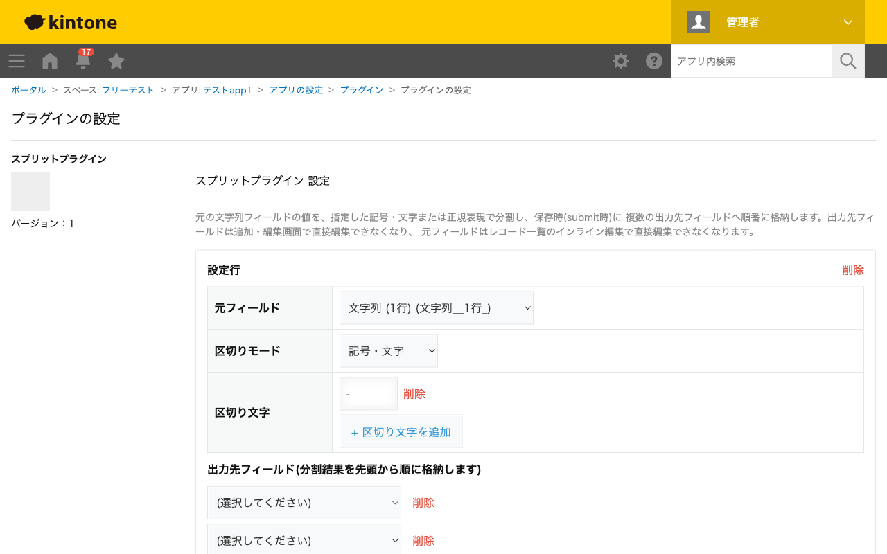

GovAppsプラグイン 安全性を確認できる無料kintoneプラグイン集
元の文字列フィールドの値を、指定した記号・文字(複数指定可)または正規表現で分割し、保存時(submit時)に 複数の出力先フィールドへ先頭から順番に格納します。分割結果が出力先フィールドより少ない場合は余った フィールドを空にし、多い場合ははみ出した分を切り捨てます。
「東京都〇〇区△△1-2-3」のような住所文字列を「-」や全角スペースなど複数の記号で分割し、町名・番地・号を別々のフィールドに格納できます。区切り文字は複数登録できるので、表記ゆれ(全角/半角ハイフンなど)にもまとめて対応できます。
区切りモードを「正規表現」に切り替えると、[-/\s]+のようなパターンで「ハイフン・スラッシュ・空白のいずれか1文字以上」をまとめて区切り文字として扱えます。記号・文字モードで1つずつ列挙するより設定が簡潔になります。
全角スペース区切りで入力された氏名フィールドを、姓・名の2フィールドに分割します。出力先フィールドを2つだけ設定すれば、3つ目以降の分割結果(ミドルネーム等)は自動的に切り捨てられます。
分割処理は保存(submit)時にのみ実行されます。入力中のリアルタイムプレビューはありません。
kintoneセキュアコーディングガイドラインに沿って実装時にチェックしています。特に重要な点は次のとおりです。
textContentまたはcreateElementで行っており、innerHTMLへの外部由来文字列の差し込みはありません。詳細な確認項目・確認日は下記GitHubのチェックリストに全項目を掲載しています。

このプラグインはREST APIを一切実行しません。フィールド情報の取得はkintone.app.getFormFields()のみで行い、
分割処理はsubmitイベント内のローカルな文字列処理のみで完結します。API実行数制限に影響することはありません。